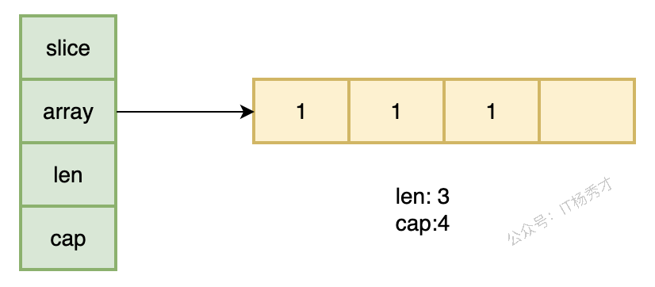
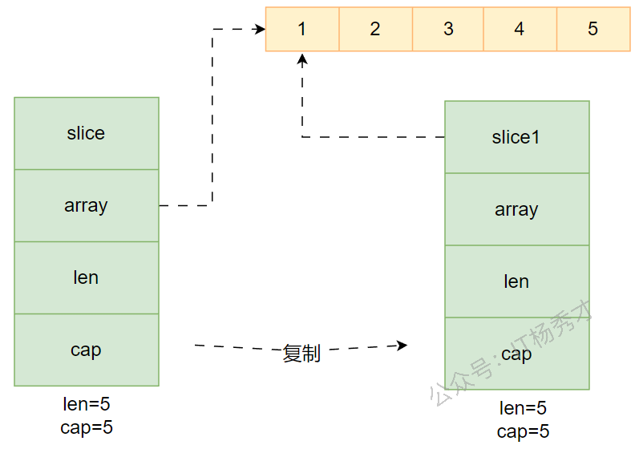
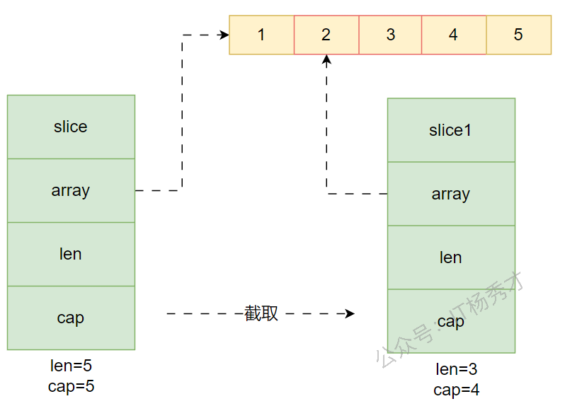
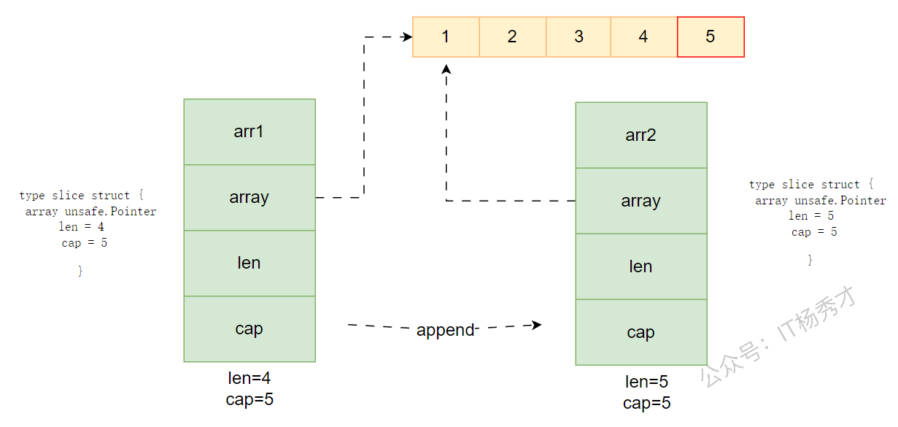
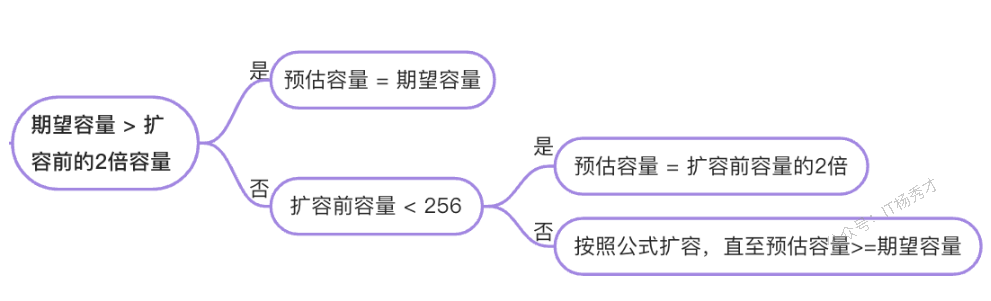

🗄️ 数组：固定长度的"储物柜"
📖 什么是数组？
在 Go 语言中，数组是一种固定长度的数据结构，它存储相同类型的元素。数组的长度在定义时就必须确定，并且之后不能改变。
想象一下，数组就像一个固定大小的储物柜，有着明确数量的格子，每个格子只能存放相同类型的物品。一旦这个储物柜建好了，格子的数量就不能改变了。
📝 如何定义数组
在 Go 语言中，定义数组有多种方式：
|
|
⚡ 数组的特点
- 长度固定：一旦定义，长度不可改变
- 类型固定：同一个数组只能存储相同类型的元素
- 长度是类型的一部分：
[3]int和[5]int是不同的类型
💻 实战小例子
|
|
运行结果：
|
|
🧩 切片是什么
如果说数组是固定大小的储物柜，那么切片就像是一个可以随时扩展的**“魔法储物柜”**。它的大小是可以动态调整的，这让我们在处理不确定数量的数据时更加灵活。
当你在开发中需要存储动态数量的元素时，数组就无法满足了。例如：
- 存储用户列表，但用户数量不确定
- 处理用户输入的数据，数量未知
- 需要频繁添加或删除元素
这时，切片（Slice）就派上用场了！
Go 语言中切片是对数组的抽象。
Go 数组的长度不可改变，在特定场景中这样的集合就不太适用。Go 提供了一种灵活、功能强悍的内置类型切片（“动态数组”）。与数组相比，切片的长度是不固定的，可以追加元素，在追加时还可能触发扩容。切片可以理解为对底层数组的一个动态视图。Go 切片有三个属性：指针（pointer，指向底层数组中切片起始位置）、长度（len）和容量（cap，表示从起始位置到底层数组末尾的容量）。
核心特点：
- 切片就像数组的引用。切片并不存储任何数据，它只是描述了底层数组中的一段。
- 更改切片的元素会修改其底层数组中对应的元素。
- 和它共享底层数组的切片都会观测到这些修改。
🛠️ 切片的声明与创建
-
声明切片：
var identifier []type，此时为 nil 切片（还未指向数组） -
创建切片
-
截取数组
arr[startIndex:endIndex]：将 arr 中从下标 startIndex 到 endIndex-1 下的元素创建为一个新的切片- 默认
startIndex时表示从 arr 的第一个元素开始 - 默认
endIndex时表示一直到 arr 的最后一个元素
1 2arr := [5]int{1, 2, 3, 4, 5} s := arr[1:4] // s = [2 3 4]，len=3，cap=4 -
使用
make函数make([]var_type, length)make([]var_type, length, capacity)
1 2 3var slice1 []type = make([]type, len) // 也可以简写为 slice1 := make([]type, len) -
字面量初始化：
s := []string{"Go", "Rust", "Java"} -
通过切片 s 初始化切片 s1：
s1 := s[startIndex:endIndex]
-
🔑 切片的三个核心概念
切片有三个核心概念，需要深入理解：
- 指针：指向底层数组的第一个可见元素
- 长度：切片当前的元素个数（
len） - 容量：从切片起始位置到底层数组末尾的元素个数（
cap）
在运行时里，切片底层可以抽象成下面这个结构：
|
|

其中：
array：指向一块连续的底层数组len：当前切片里实际可访问的元素个数cap：从切片起始位置到底层数组末尾，可容纳的元素个数
注意： cap 一定大于等于 len。当 cap > len 时，说明后面还有预留空间，只是这部分元素暂时不属于当前切片。
|
|
运行结果：
|
|
🛠️ 切片的创建方式
|
|
⚠️ 切片的注意事项
- 切片是引用类型：多个切片可能共享同一个底层数组
append可能触发扩容：append可能导致重新分配内存，生成新的底层数组- 使用 make 创建切片时：可以指定容量来减少内存重新分配的次数
提示
nil 切片与空切片是不同的：
- nil 切片 ：不会创建底层数组，指针为 nil
- 空切片 ：会创建一个空的底层数组（长度为 0），指针指向一个特殊的内存地址（通常是 runtime.zerobase）
⚙️ 基本操作
✂️ 切片截取
切片底层是一块连续的内存空间，所以和数组一样，也可以通过下标范围来截取。
截取规则是前闭后开：
s[i:j]包含下标is[i:j]不包含下标j
|
|
运行结果：
|
|
从这个例子可以看出两点：
- 新切片的容量：从新切片起始元素开始，一直到原底层数组末尾
- 新切片共享原底层数组：所以修改
arr2[0]会直接影响arr1
🔄 追加元素
|
|
s是一个元素类型为T的切片- 其余类型为
T的值将会追加到该切片的末尾。
🔍 遍历元素
|
|
for 循环的 range 形式可遍历切片或映射。
当使用 for 循环遍历切片时，每次迭代都会返回两个值。
- 第一个值为当前元素的下标
- 第二个值为该下标所对应元素的一份副本。
注意事项
- 可以将下标或值赋予
_来忽略它。
|
|
提示
在循环中 append 的陷阱（ for-range 每次迭代都使用同一个变量）
在 Go 的 for i, v := range slice 循环中：
v是 每次循环复用的同一个变量，只是其值在变。- 所以
&v每次取的其实是 同一个地址。 - 所以你
append(&v)多次，实际上是把 相同地址的指针添加了多次。
错误示例
|
|
正确示例
定义一个局部变量来捕获每个元素
|
|
🗑️ 删除元素
Go 没有内置的删除元素语法，需要手动实现
- 删除尾部元素：移动尾部指针
|
|
- 删除首部元素：移动首部指针
|
|
- 删除中间元素（第i个元素）
|
|
📏 获取长度和容量
切片是可索引的，并且可以由 len() 方法获取长度。
切片提供了计算容量的方法 cap() 可以测量切片最长可以达到多少。
func len(var_name []T)func cap(var_name []T)
📋 复制切片
|
|
-
dst：目标切片（目标空间）。 -
src：源切片（被复制的数据源）。 -
返回值：成功复制的元素数量（即
min(len(dst), len(src))）。
先看最容易混淆的一点：slice 的赋值复制和数组的赋值复制并不一样。
|
|
运行结果：
|
|
这说明：
- 切片赋值：复制的是切片头部结构，底层数组仍然共享
- 数组赋值：复制的是整块数组数据，互不影响
如果你只是写出 b := a，复制的并不是底层数组，而只是切片头部结构，因此两个切片仍然会共享同一块底层内存。
|
|
运行结果：
|
|

如果你想要一份真正独立的新切片，就需要先分配新空间，再用 copy 复制内容：
|
|
运行结果：
|
|
这里返回的 cnt 表示实际复制的元素个数，也就是 min(len(dst), len(src))。
🔓 切片展开
在 Go 里，... 主要有 两个核心用途，意义完全取决于它出现的位置
🔀 可变参数
表示可变参数（variadic parameter），也就是这个参数可以接收任意数量的值。
|
|
📤 切片展开
表示展开切片（slice expansion），把切片里的元素依次当作独立的参数传入。
|
|
append 中表示把一个切片的元素依次追加/传入
|
|
🛠️ slice 和 slice 指针的区别
- 当 slice 作为函数参数时，就是一个普通的结构体。在调用者看来，实参 slice 并不会被函数中的操作改变
- 当 slice 指针作为函数参数，在调用者看来，是会被改变原 slice 的。
值得注意的是，不管传的是 slice 还是 slice 指针，如果改变了 slice 底层数组的数据，都会反映到实参 slice 的底层数据。因为底层数据在 slice 结构体里本来就是一个指针。即使 slice 结构体自身没有被替换，仍然可以通过这个底层数组指针修改元素内容。
- 传 slice 和 slice 指针，如果对 slice 数组里面的数据做修改，都会改变 slice 底层数据
- 传 slice 是拷贝，在函数内部修改，不会修改 slice 的结构，
len和cap不变；传 slice 指针时，则可以直接修改其 slice 结构。
因此要想真的改变外层 slice，只有将返回的新的 slice 赋值到原始 slice，或者向函数传递一个指向 slice 的指针。
⚙️ nil 切片、值为 nil 的切片与空切片
- nil 切片：底层指向数组为 nil，常见于声明阶段
var s []int - 空切片：底层指向数组为空数组（非 nil），常见于初始化阶段
s := []int{}
⚠️ 踩坑实录总结
🔧 误用slice预分配空间
下面代码预期创建容量为2的[]int，实际创建了长度为2的[]int。
|
|
问题原因：
make() 函数可以创建 slice：
make([]T, length, capacity)：创建初始容量为 capacity、初始长度为 length（用零值填充）、类型为[]T的 slicemake([]T, length)：创建初始长度为 length（用零值填充）、类型为[]T的 slice
length 表示初始长度，也就是 slice 已经包含数据的个数，默认会用零值填充；
capacity 表示初始容量，也就是 slice 当前最多可容纳的数据个数，满足一定条件后会自动扩容。
更准确的写法： 如果你只是想预留容量，而不是先放入零值元素，就应该把长度设为 0：
|
|
🔄 注意slice和底层数组的关系
slice底层数据结构：
array：用于存储数据，指向一块连续的内存空间；len：大小，表示已存储数据的数量；cap：容量，表示连续内存空间的大小
对数组进行截取操作后赋值给切片（并没有拷贝），与原数组共用内存空间，所以修改切片也会修改原数组对应的数据。
使用 append 添加数据后，触发扩容产生新的array，与原数组不是同一个内存空间，所以修改原数组不会对切片产生影响。

❓ 从一个切片截取另一个切片，修改新切片的值会影响原来的切片内容吗？
答案： 会影响，因为两个切片共享同一个底层数组。
分析：
当从一个切片截取另一个切片时，新切片和原切片会共享同一个底层数组。这是因为切片的本质是对底层数组的一个视图，它包含三个字段：指向底层数组的指针、长度和容量。
|
|
在上面的例子中，当我们修改新切片 newSlice 的第一个元素时，原始切片 original 的对应元素也被修改了。这是因为两个切片共享同一个底层数组，修改其中一个会影响另一个。
注意： 如果对新切片进行 append 操作，当容量不足时会触发扩容，此时新切片会指向一个新的底层数组，与原切片不再共享内存，修改新切片就不会影响原切片了。
|
|
在这个例子中，当对新切片进行 append 操作时，由于容量不足触发了扩容，新切片指向了一个新的底层数组，所以修改新切片不会影响原切片。
🔬 底层原理
🧱 数据结构
切片的底层结构体如下：
|
|
🧩 slice 追加扩容
切片是一个小结构体，append 又是值传递，所以每次调用 append 时，复制的是切片头，不是底层数组本身。
如果多个切片头仍然指向同一块底层数组，而且容量还够，那么后续 append 很可能直接写到同一块数组里，互相覆盖。
|
|
运行结果：
|
|
🤔 为什么 arr2 和 arr3 都是 [1,3]？
从运行结果可以看到，arr2 和 arr3 的值都是 [1,3]，而不是预期的 arr2=[1,2] 和 arr3=[1,3]。原因就在于它们共享同一块底层数组。
💡 执行过程详解
让我们逐步分析代码的执行过程：
步骤 1：创建切片
|
|
- 创建一个长度为 0、容量为 4 的切片
- 底层数组：
[_, _, _, _]（未初始化） - arr1：
len=0, cap=4
步骤 2：追加元素 1
|
|
- 底层数组：
[1, _, _, _] - arr1：
len=1, cap=4，值为[1]
步骤 3：追加元素 2（关键！）
|
|
- append 是值传递，返回一个新的 slice 结构体
- 新的 slice 结构体（arr2）：
ptr：指向同一个底层数组len：2（arr1.len + 1）cap：4
- 底层数组变为：
[1, 2, _, _] - arr2：
len=2, cap=4，值为[1, 2] - 注意：arr1 的 len 仍然是 1，值为
[1]
步骤 4：追加元素 3（问题出现！）
|
|
- arr1 的
len=1, cap=4 - append 在 arr1 的基础上追加，会在底层数组的第 2 个位置写入 3
- 关键：这个位置原本是 arr2 写入的 2！
- 底层数组变为：
[1, 3, _, _]（2 被 3 覆盖了！） - arr3：
len=2, cap=4，值为[1, 3] - 副作用：arr2 也指向这个底层数组，所以 arr2 也变成了
[1, 3]！
📐 内存变化示意图
|
|

⚠️ 关键要点
-
append 返回新 slice 结构体：每次 append 都会返回一个新的 slice 结构体，但它们共享底层数组
-
len 决定可见范围：arr1 的 len=1，所以 arr1 只能看到第一个元素
[1] -
append 写入位置：append 在
arr1[len]的位置写入新元素，即底层数组的第 2 个位置 -
共享底层数组的副作用：多个 slice 共享同一个底层数组时，一个 slice 的修改会影响其他 slice
✅ 正确写法
如果希望 arr2 和 arr3 独立，应该使用完整切片表达式或复制：
方法 1：使用完整切片表达式
|
|
方法 2：使用 copy
|
|
Go 语言内置函数 append 参数是值传递，所以 append 函数在追加新元素到切片时，append 会生成一个新切片，并且将原切片的值拷贝到新切片。注意这里的新切片并不是指底层的数据结构，而是指 slice 这个结构体。所以我们每调用一次 append 函数，都会产生一个新的 slice 结构体，但是他们底层都指向同一块连续的内存区域，即共享底层数组，这里 arr2 原本追加的是 2，但随后 arr3 := append(arr1, 3) 复用了同一块底层数组，把对应位置覆盖成了 3。
📈 扩容机制
当容量不足时，Go 会创建一个新的底层数组，把老数据拷贝过去，然后返回新的切片头。
⏮️ Go 1.18之前
|
|
- 扩容逻辑
- 请求的容量大于当前容量的两倍则扩容到请求的容量
- 若请求的容量小于当前容量的两倍
- 当前容量小于1024 时扩容到原来的两倍
- 当前容量大于 1024 时扩容到原来的1.25倍
⏭️ Go 1.18之后
|
|
扩容逻辑：
- 请求的容量大于当前容量的两倍则扩容到请求的容量
- 当前容量小于 256 时直接扩容到原来的两倍
- 当前容量大于 256 时逐步扩容，逐步增加约 1.25 倍。
- 除上述逻辑外，Go 还会根据切片中的元素大小对齐内存，因此扩容不总是精确的 2 倍或 1.25 倍
运行时源码里对应的平滑增长公式可以概括为：
|
|

简单看一个触发扩容的例子：
|
|
运行结果：
|
|
这个例子里容量从 4 扩到了 8，属于小切片场景下的直接翻倍。